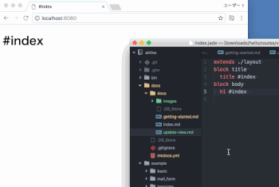

Update view
Airlane has supported jade template (It's default, you can change template engine you like). Your index file localed to hello/routes/views/index.jade.
Edit index.jade, Web browser reloads view automatically.

Auto re-deply
When you edit server-side JavaScript code, Airlane immediately reflects it. You don't need to restart server by hands.
Auto generate client-side JavaScript and Stylesheet
Airlane supports ECMA2016 JavaScript on Web browser. It's convert to ECMA5 by babel. And Airlane provides browserify, so you can use npm module in your client JavaScript code. Normarl JavaScript code is generated by Airlane automatically. Your JavaScript locates to hello/routes/public/app.js, and converted file locales to hello/routes/public/app.min.js. This JavaScript file is loaded by HTML file in hello/routes/views/layout.jade, so you don't need care about it.
npm with JavaScript
You can use client JavaScript with npm packages such as bootstrap, react, jQuery, or Vue. If you want to use bootstrap, at first you should install bootstrap on npm.
npm install bootstrap --save
And you write code in your JavaScript file located hello/routes/public/app.js.
global.jQuery = global.$ = require('jquery');
require('bootstrap');
Your JavaScript file hello/routes/public/app.min.js will update soon, and you can use it.
ECMA2016 code syntax
Airlane supports ECMA2016 syntax in client JavaScript. When you use jQuery, you can write it like below to hello/routes/public/app.js.
$(() => {
$("a").each((i, k) => {
this.on('click', e => {
// You code is here.
})
});
})
Those code are converted to ECMA5 JavaScript by Babel. Generated code located to hello/routes/public/app.min.js.
npm with Stylesheet
Airlane supports load stylesheet file in npm package, too. It's limited feature, but it supports bootstrap. If you want to use bootstrap, execute command first.
npm install bootstrap --save
And you write a line in your stylesheet file located hello/routes/public/app.css.
@import bootstrap;
Your stylesheet file hello/routes/public/app.min.css will update soon with bootstrap stylesheet.